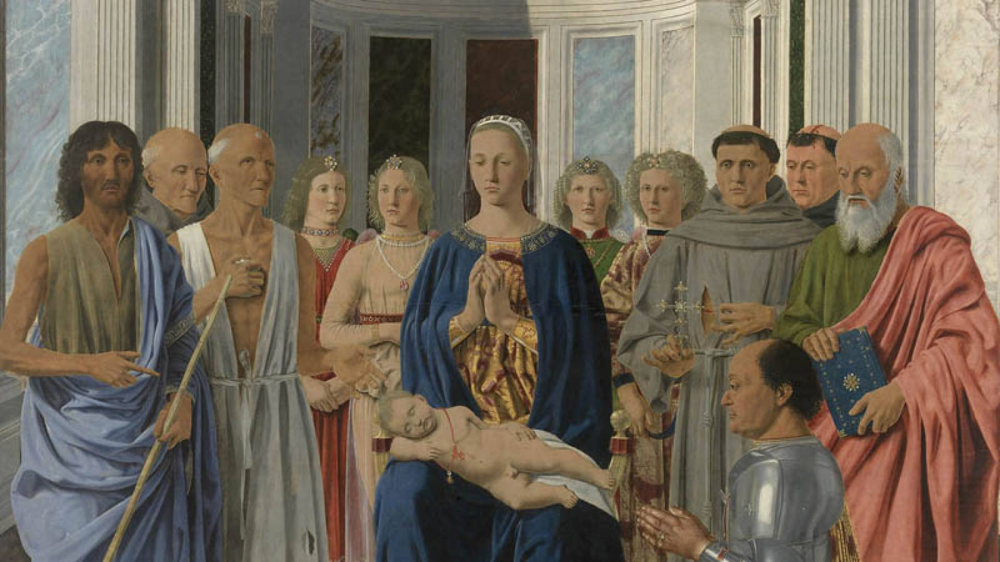
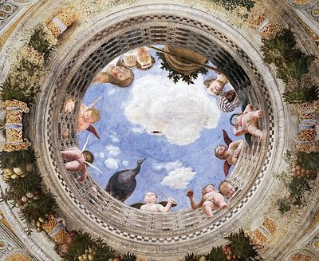
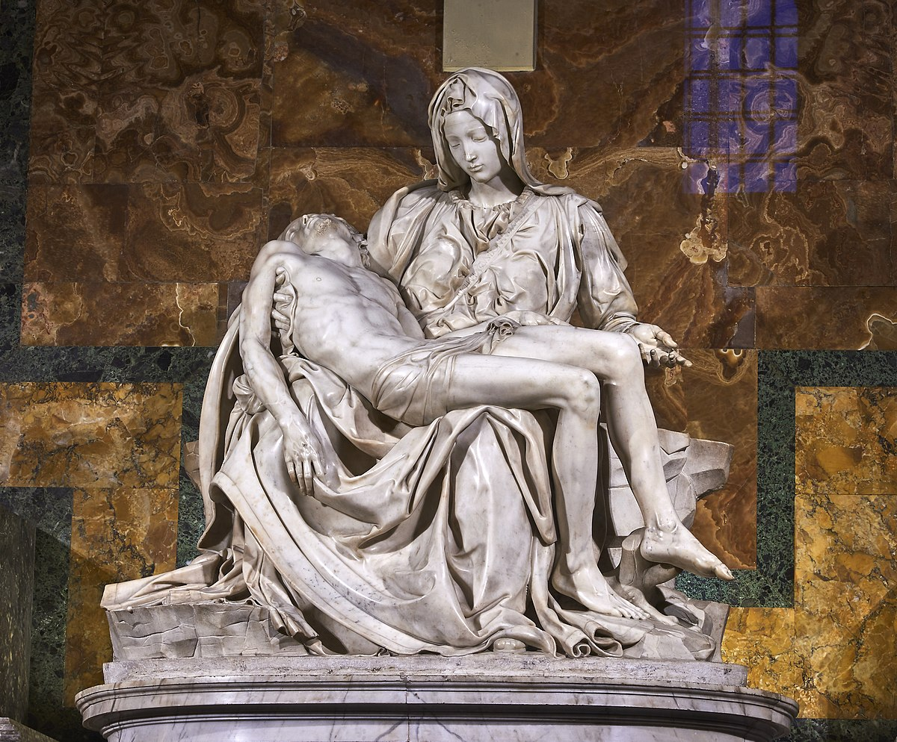

The Renaissance is of global significance for the history of European culture, as it is a period of genuine revival of all types of activity. Italy experiences the Renaissance in the 15th-16th centuries.
The distinctive feature of the Renaissance is the secular nature of culture, its humanism and anthropocentrism. During this period, every lord and prince strives to show off his importance and wealth by decorating and ennobling the palace or city in which he lives. The greatest flowering of art and culture occurs in Florence, which, under the leadership of the Medici family, and especially Lorenzo the Magnificent, became rich in monuments, churches and palaces. But many other cities in Italy also began to create works of art of inestimable importance, which made Italy one of the richest countries in the world in a cultural sense.
There are many great artists of the fifteenth century - Brunelleschi, Donatello, Masaccio, Piero della Francesca, Mantegna, Botticelli and others - but there are only three geniuses of the sixteenth century - Leonardo, Michelangelo and Raphael. Titian is also worthy of the greatest attention. These great artists try to overcome rigid rationalism and perspective-geometric norms for a new goal - direct study of nature. Let's consider the most important artists, architects and geniuses of the Italian Renaissance and their great masterpieces.
Filippo Brunelleschi (Florence, 1377 - 1446) was an Italian architect and sculptor of the Renaissance . He studied in Florence , but in Rome he studied the structures of ancient architecture, especially the construction of the vault. His masterpiece is the dome of Santa Maria del Fiore in Florence , a grandiose dome (90 m high and 42 m in diameter) in masonry. To reduce its weight, the artist came up with a brilliant idea: he built it in an octagonal shape, leaving an empty space between the outer and inner shell of the dome, which ends in a pointed end (according to the Gothic style), and introduces a drum . The famous red dome has become a symbol of Florence, and seems to float above the entire city.
Donatello (Florence, 1386-1466) is considered the most important sculptor of the 15th century and is also the founder of the individualized sculptural portrait. Donatello interprets the classical spirit as a study of the human body in its reality, that is, as it is without any embellishment. To do this, he always used ordinary people from the street as models. His masterpiece is considered to be David , a bronze statue in which you can see a fusion of the recreation of antiquity and the anxiety of the Renaissance in a continuous play of light and shadow.
Masaccio (San Giovanni Valdarno, 1401 - Rome, 1428) is a famous Italian painter, the greatest master of the Florentine school, a reformer of Renaissance painting . Masaccio interprets a new sense of space in accordance with the laws of perspective and studies light, which, playing with shadows, gives relief to bodies and emphasizes the emotional tension of his figures. Among his most important works are the frescoes in the Brancacci Chapel in Florence.
Fresco in the Brancacci Chapel, Florence
Piero della Francesco (Borgo Sansepolcro, 1416/17-1492) was an Italian painter and theorist who established the rules of perspective with geometric precision. The atmosphere of his paintings is rarely dramatic, and the figures appear impassive, but this emphasizes the solemnity of the scenes. Among his best works is the Montefeltro Altarpiece , also called the Madonna dell'Uovo ( Italian : uovo - egg), because the egg hanging from the apse is a symbol of life. This work is considered the most representative painting of Italian painting of the fifteenth century.
Painting "Montefeltro Altarpiece", Milan
Andrea Mantegna (Padua, 1431 - Mantua, 1506) is an Italian artist, a representative of the Paduan school of painting. Unlike most other classics of the Italian Renaissance , he painted in a harsh and sharp manner. His painting is characterized by a bold perspective of figures and the ability to transform the space of the whole with the help of pictorial decor. He is the author of the paintings of the so-called Camera degli Sposi (translated from Italian as " Room of the spouses ") in the Ducal Palace of Mantua . Particularly beautiful is the detail of the vault, where figures and animals appear in a dizzying perspective to the sky from the balcony. This work will serve as an example for artists of subsequent generations.
Camera degli Sposi, Mantua
Sandro Botticelli (Florence, 1445 - 1510) - Italian painter, one of the most important masters of the Renaissance , a representative of the Florentine school of painting. The artist seeks in his painting the perfect balance between myth and reality, which is evident in his most famous works - " Spring " and " The Birth of Venus ", two objects of pagan inspiration. The figures, according to the concept of the Renaissance , have subtle features and become part of nature. Beauty is idealized. In his paintings, he uses light colors, veils and transparency to create a supernatural atmosphere.
Most Renaissance figures were experts in many disciplines, but the true universal genius was Leonardo da Vinci (Vinci, Florence, 1452 - Amboise, 1519) , an artist, scientist, engineer and writer at the same time. Da Vinci claims that in order to uncover the secret of things, one must carefully observe them, so he left many sketches and drawings that reveal his ability to observe even the smallest natural phenomena - he studies and reproduces the flight of birds, plants, the human body and designs flying machines, new weapons and all sorts of inventions. Among his masterpieces we remember the Mona Lisa or Gioconda , whose enigmatic smile has become notorious, and the Last Supper , an extraordinary fresco that reproduces the drama of the Last Supper of Jesus with the Apostles . The figures, whose outlines are blurred, fit into the landscape, creating a dreamy, almost unreal atmosphere. This technique, called the " nuances " technique, with a gradual transition from dark to light tones, allows the artist to move away from traditional Florentine art based on drawing and volume, and to immerse the figure in a natural cosmic image, the totality of the environment and man, a form of universal pantheism beyond time.

Fresco "The Last Supper" (1498), Milan
Michelangelo Buonarroti (Caprese, Arezzo, 1475 - Rome, 1564) is an Italian sculptor, artist, architect, poet and thinker. One of the greatest masters of the Renaissance and early Baroque . Possessing a difficult character, very withdrawn and solitary, he is tormented by the search for perfection. During his long life, he had many enemies. The sculptor, as he preferred to define himself in each case, is the author of statues full of expressive power, including " Lamentation of Christ ", David and Moses. In the Vatican he frescoed the Sistine Chapel , a titanic work that cost him ten years of effort and caused him serious problems with his eyesight: the gigantic figures in the fresco clearly express the anxiety of his tormented soul. Finally, among his works as an architect, the grandiose dome of San Pietro should be mentioned.
"Lamentation of Christ" (1499), Vatican
Raphael Santi (Urbino, 1483 - Rome, 1520) - Italian painter, graphic artist and architect of the Umbrian, and then Roman, school. One of the most prominent representatives of the art of the High Renaissance . During his short life, he became one of the most famous and richest artists in Italy . Raphael was the son of an artist, from whom he received his first artistic education, became famous at a very young age. In his paintings, he expresses the classical ideal of serene and harmonious beauty. He worked in Florence, where he painted many lovely Madonnas , and in Rome , where he painted the halls of the Vatican , the famous Stanze of Raphael , with harmoniously arranged scenes on a symmetrical background.
The Renaissance in Italy is a period of great change and achievement. The most famous achievements of the Italian Renaissance are the works of fine art and architecture, but the period is also marked by flourishing in literature, music, philosophy and various sciences. The greatest works and masterpieces of Renaissance artists are associated not only with Florence but also with Rome , since it was in the Eternal City that they could directly experience the legacy of ancient culture. Italian Renaissance painting exerted a dominant influence on European painting for many centuries.